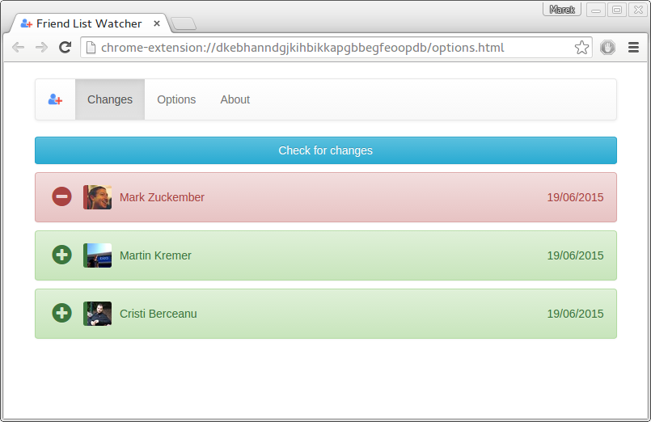

Chrome extension that shows modifications of your Facebook friend list
This is Friend List Watcher for Facebook. It stores friend list and its changes since last visit - so you can track who removed or added you as a friend.
Changes are stored into facebook notes in YAML. https://www.facebook.com/me?sk=notes
